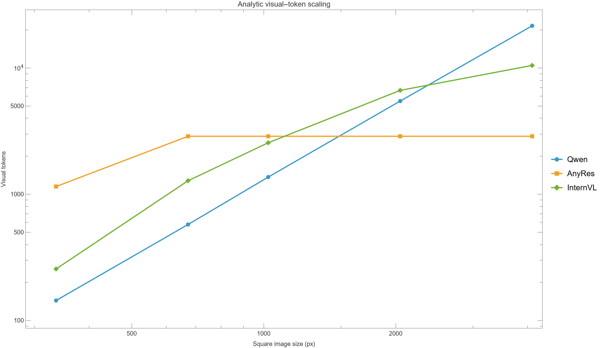
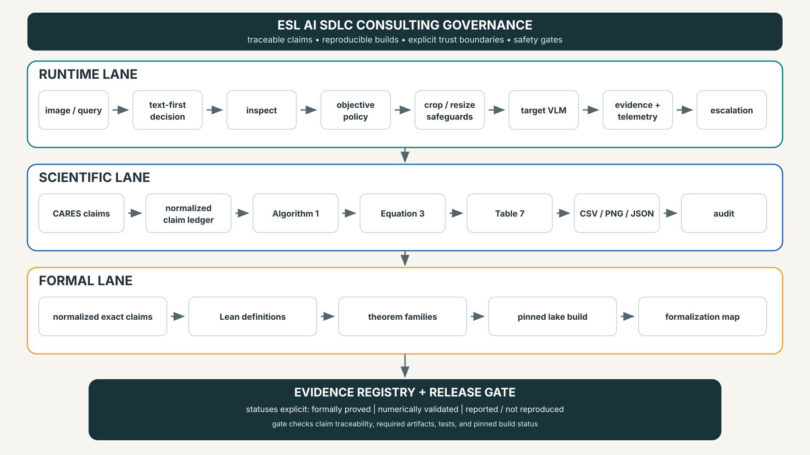
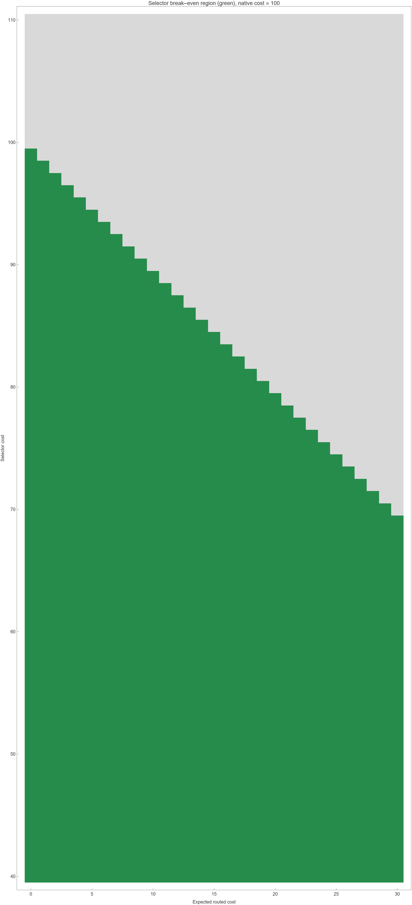

Adaptive Visual Context
From CARES Research to a Verified Agent Workflow
A rigorous bridge from query-conditioned resolution research to deterministic tooling, executable scientific checks, and narrowly scoped Lean proofs.
Daniel Liezrowice
Presenter · Engineering Software Lab
ESL — AI SDLC Consultants
Research attribution
CARES — Kimhi, Shabtay, Giryes, Baskin & Schwartz (2025)
arXiv:2510.19496v3
Independent Apache-2.0 implementation · not affiliated with or endorsed by CARES authors.
Executive scientific thesis
Conditioning changes allocation
The same pixels can require different evidence. “Summarize layout” may tolerate a proxy; “read CVE-2026-…” may require an exact crop. Resolution is conditioned jointly on image x and query q.
Policy π(x,q)
Image x + query q → allocate the least visual context sufficient for the objective: resolution, crop, and token budget.
VLM pipeline — where visual cost enters
H×W
patch tokens
bridge
self-attention
G tokens
Increasing V raises attention-like s²h and projection/MLP-like sh² work. Pixel count is only a proxy; tokenization and latency are target-model specific.
Why visual tokens dominate

At 4096 px
Qwen: 21,609 visual tokens (99.54% with 100 text)
InternVL: 10,496 (99.06%)
AnyRes analytic cap: 2,880 (96.64%)
Analytic Table 7 formula reproduction—not measured target latency and not benchmark-accuracy reproduction.
Capability versus allocation
AnyRes / LLaVA-NeXT
Tiling preserves local detail and aspect ratios. It expands feasible budget; it does not decide whether this query needs it.
Native dynamic resolution
Qwen2-VL maps varying image sizes to varying token counts. Dynamic capability is not objective-conditioned allocation.
CARES selector
A query-aware selector predicts the smallest sufficient input range before invoking an untouched target VLM.
CARES problem definition
Finite support
R={r₁,…,rK}; choose among supported ranges.
Target untouched
Selection is upstream; F is not retrained or modified.
Minimal sufficient
First supported range satisfying a metric-derived criterion—not globally minimal pixels.
Label generation — utility and sufficiency
Thresholds
Paper setup: τ=.85 utility floor; δ=.10 tolerance. Both encode metric/teacher assumptions.
Non-monotonic utility
Use all higher classes. u={.86,.80,.99}: r₁ fails because later gain .13>δ.
Terminal fallback
If no lower range qualifies, select the highest supported class.
ANLS = average normalized Levenshtein similarity; labels inherit metric sensitivity.
CARES architecture
≈350M
Key separation
Selector inference is paid once; routed target inference dominates remaining cost.
Information ceiling
A low-resolution selector cannot infer evidence absent from its proxy.
Compatibility
No target fine-tuning; prediction maps to supported target input.
Training protocol and variant
| Reported setting | Value |
|---|---|
| Training samples | 80,000 |
| Datasets | 4 |
| Label smoothing | 0.05 |
Base selector
Low-res proxy + truncated SmolVLM representation + classification head; labels from target-VLM utility sweeps.
AR Granite-Docling variant
Paper also reports an autoregressive variant; architecture remains task/model dependent.
80K / four datasets / 0.05 are reported facts—not reproduced here.
Continuous inference and upward rounding
Why upward?
Avoid selecting a supported range below the continuous expectation.
Boundary
Rounding guarantees support membership and order—not empirical sufficiency.
Reported evidence across target models
| Target | Reported score | Reported cost |
|---|---|---|
| Granite | .59→.60 | −63% |
| InternVL | .77→.77 | −64% |
| Qwen2.5-VL-72B | .79→.80 | −70% |
| GPT-4o | .69→.68 | −55% |
Scope
Nine benchmarks · four target models (paper report).
Evidence status
REPORTED, NOT INDEPENDENTLY REPRODUCED. Score aggregation, hardware, routing overhead, and exact cost definition require empirical replication.
Scientific interpretation and limitations
Selector overhead
Break-even requires Cs+E[Cr]<Ch.
Proxy blindness
Low resolution can hide OCR and tiny-object evidence.
Metric dependence
ANLS labels inherit teacher, answer, threshold, and benchmark choices.
Interaction scope
Single-image/single-turn focus; video, multi-page, conversation need new policies.
Safety gap
No independent adversarial, calibration, OOD, or safety study supplied here.
Cost proxy
Pixel/token reduction does not guarantee latency, memory, energy, or quality.
Literature map by intervention stage
Input
DRNet · AnyRes · Qwen2-VL
Encoder
DynamicViT · EViT · ToMe
VLM sparsity
HiRED · SparseVLM
Depth
PyramidDrop · VTW
Elastic
TokenFLEX · M3 · LLaVA-Mini
Cascade
SGL · compute-optimal scaling
Input-resolution lineage
DRNet (2021)
Per-input dynamic resolution for efficient recognition; training changes the model; query awareness is not the central VLM objective.
AnyRes / LLaVA-NeXT
Grid/tiles preserve detail and aspect ratio. Mechanism exposes capacity, but does not choose by question.
Qwen2-VL
Arbitrary image size to variable visual tokens: capability, not necessarily allocation.
ViT token reduction mechanisms
DynamicViT
Predicts retained tokens; attention masking supports differentiable training.
EViT
Keeps attentive tokens and fuses the rest into a summary.
ToMe
Merges similar tokens while preserving aggregate “size” weights.
Composition warning: reducers can remove evidence selected upstream. Joint calibration is required.
VLM inference sparsification
HiRED
Allocates visual-token budget using high-resolution encoder signals, retaining spatially informative tokens.
SparseVLM
Uses text-to-vision relevance and visual-token ranking for task-aware retention.
Schematic controller equations; consult papers for exact definitions.
Depth-wise visual-token reduction
PyramidDrop
Drops visual tokens progressively across LLM depth; savings compound through quadratic and linear sequence terms.
Visual Tokens Withdrawal
Withdraws tokens after their information influences text states. Timing is a fidelity/control variable.
Resolution controls input evidence; depth controls retention.
Elastic trained models and controller gap
TokenFLEX
Trains over flexible visual-token budgets; runtime budget choice still needs a controller.
Matryoshka Multimodal Models
Nested representations remain useful at multiple granularities; deployment still chooses budget.
LLaVA-Mini
Learned modality interaction compresses visual burden; architecture is not a query policy.
Small–large collaboration and compute optimality
SGL
Small model can route/draft/handle easy work and escalate. Overhead and error correlation determine value.
Compute-optimal VLMs
Model size N and token budget T form a joint design space; more image tokens are not universally optimal.
OCR caveat: below readability threshold, capacity cannot recover missing characters.
Composition thesis — a generalized controller
select evidence scale
prune or merge
withdraw
model/escalate
Objective: minimize expected cost subject to fidelity, safety, support, and evidence-retention constraints.
OSS project goals and evidence philosophy
Practical runtime
Portable Agent Skill + deterministic Pillow CLI. Explicit keyword policy—not trained CARES ≈350M selector.
Executable science
Wolfram reproduces Algorithm 1, Equation 3, Table 7 accounting, sensitivity, and break-even economics.
Narrow formalization
Lean proves selected exact statements under assumptions. It does not prove the paper or empirical accuracy.
End-to-end project workflow

Agent Skill runtime behavior
TEXT FIRST
INSPECT
OBJECTIVE
CROP FIRST
SAFE RESIZE
ESCALATE
Text-first gate
If text, DOM, OCR, or structured data answers the question, avoid image inference.
Fidelity policy
Overview 1280/JPEG88; detail 2048/PNG; exact/critical preserve dimensions.
Escalation
Warnings and consequential evidence trigger source verification or higher fidelity.
Python implementation — deterministic by design
CLI / API
inspect PATHprepare PATH --objective …
auto | overview | detail | exact | critical
crop X,Y,W,H · max-edge N
Safeguards
EXIF transpose; crop before resize; no upscale/overwrite; frame-count and color-mode checks.
Deterministic JSON
Policy/reason, dimensions, crop, format, pixel reduction, provenance, warning.
19 focused tests reported. Pixel reduction is only a proxy for target token and latency reduction.
Worked path — exact evidence in a report
2200×1400
exact CVE + version
exact
840,120,620,400
lossless
Crop first
Isolate the CVE table region before inference; preserve source unchanged.
Verification
No downsampling; deterministic JSON audit trail; verify consequential evidence against source.
Wolfram architecture and generated artifacts
validated functions
narrative
build
checks
CSV · PNG · JSON
Package boundary
Validation, selector semantics, token formulas, break-even predicate.
Build boundary
Deterministic generation; required-artifact and audit reports.
Evidence boundary
10/10 analytic checks passed. Empirical benchmarks remain out of scope.
Wolfram scientific checks

Algorithm 1
First passing class using τ and all-higher-gain δ; non-monotonic case included.
Equation 3
Weighted expectation, one-hot recovery, deterministic bounds.
Table 7
Published token-count targets and percentages checked analytically.
Lean formalization — trust boundary
Definitions
Finite three-class expected resolution; upward rounding; positional sufficiency selector.
Theorem families
Bounds, one-hot identities, upward mass transfer, supported rounding, first-pass/fallback behavior.
Pinned build
Lean 4.19.0; Mathlib v4.19 revision c44e0c8…; lake build exit 0; proofs complete.
Critical boundary: Lean proves these statements under assumptions. It does NOT prove CARES empirical accuracy, datasets, implementation fidelity, compute savings, or the paper as a whole.
Lean proof sketches and assumptions
Assumptions
pᵢ≥0; Σpᵢ=1; ordered support. Upward transfer preserves mass and nonnegativity.
Round-up
Supported, no lower than estimate, no higher than largest support—within defined cases.
Selector semantics
Positional first-pass / second-pass / highest fallback—not numeric minimality over ℝ.
No “Lean proves the paper” claim.
Evidence matrix — do not collapse categories
| Claim | Formally proved | Numerically validated | Reported / not reproduced |
|---|---|---|---|
| Expectation bounds / one-hot | ✓ | ✓ | — |
| Algorithm 1 examples | — | ✓ | paper mechanism |
| Table 7 token accounting | — | ✓ | published values |
| Benchmark accuracy / savings | — | — | ✓ unreproduced |
| Python safeguards | — | 19 tests | project behavior |
| CARES trained-selector accuracy | — | — | ✓ unreproduced |
CI, release, licensing, and provenance
CI / release gate
pytest → artifact checks → pinned lake build. Wolfram is a documented licensed-local release check.
Licensing
Independent implementation: Apache-2.0. CARES paper: CC BY-SA 4.0. Attribution does not transfer software provenance.
Upstream boundary
CARES repo lacked software license at inspected commit 1bedb45…; no upstream source copied/adapted.
Independent; not affiliated with or endorsed by CARES authors or institutions.
ESL — AI SDLC Consultants
Discovery
claims · risks · constraints
Architecture
trust boundaries · controls
Governance
evidence · release gates
Reproducibility
Pinned tools, generated artifacts, auditable checks.
Formal verification
Narrow theorems, explicit assumptions, mapped claims.
Safety + adoption
Escalation, fidelity gates, latency/quality/user metrics.
From policy prototype to measured controller
v0.2
OCR/text extraction
frame selection
v0.3
plugin hooks
empirical harness
v0.4
learned router
calibration/OOD
v1.0
joint controller
safety/adoption gates
Adaptive context needs evidence discipline
1 · Scientific thesis
Resolution is conditioned on image and query; capability alone is not allocation.
2 · Engineering thesis
Deterministic safeguards and telemetry make behavior auditable.
3 · Verification thesis
Formal, numerical, and reported evidence must remain separate.